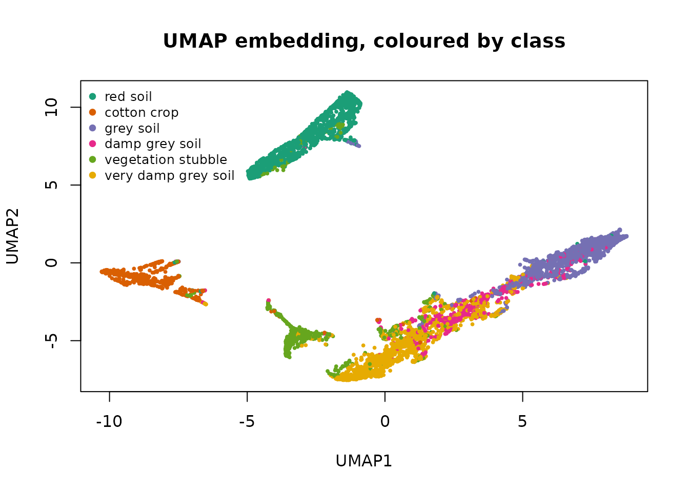
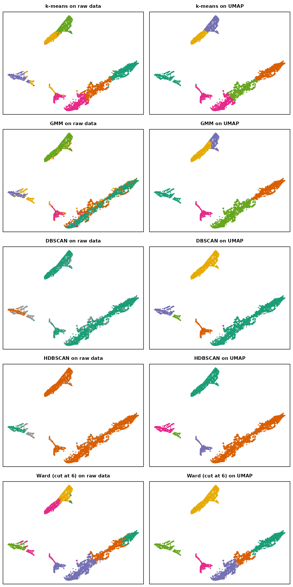
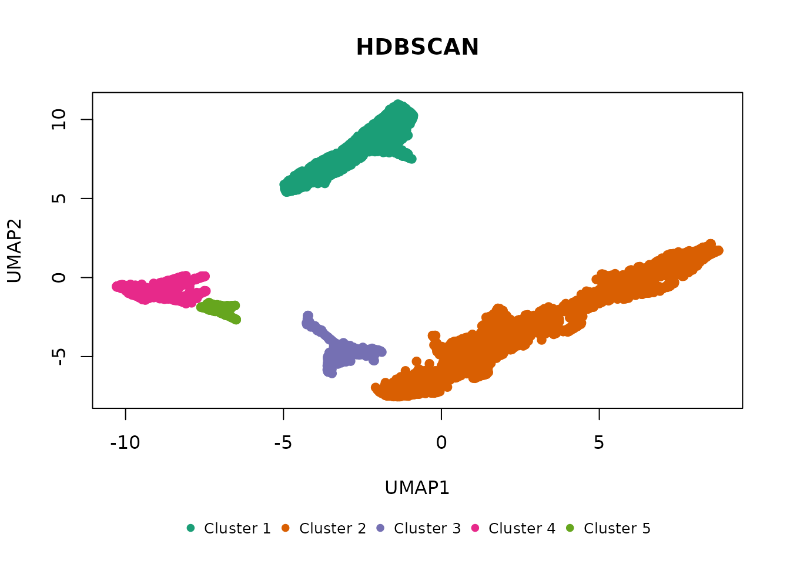

Clustering wide data directly is hard for every algorithm here, and hardest for the density-based ones: distances concentrate as dimension grows, so the contrast between dense and sparse regions that DBSCAN and HDBSCAN depend on fades, and the spatial index behind them slows down. A common remedy is to embed the data into a few dimensions with UMAP first, then cluster the embedding. This vignette shows what that does to each algorithm on one real dataset, and where it helps, where it does not, and what to watch for.
UMAP comes from the uwot package; the data from mlbench. Neither is required by shoal.
The data
Satellite holds 6,435 pixels of Landsat imagery, each
described by 36 spectral values, labelled with one of six land-cover
classes. Three of the classes are grades of the same thing: grey soil,
damp grey soil and very damp grey soil.
data(Satellite)
x <- scale(as.matrix(Satellite[, 1:36]))
truth <- Satellite$classes
table(truth)
#> truth
#> red soil cotton crop grey soil damp grey soil
#> 1533 703 1358 626
#> vegetation stubble very damp grey soil
#> 707 1508The labels are used only to score results, with the adjusted Rand index (ARI): 1 for a perfect match, 0 for chance agreement. Noise points count as their own class, so an algorithm that discards data pays for it.
ari <- function(a, b) {
a <- ifelse(is.na(a), -1L, as.integer(a))
b <- ifelse(is.na(b), -1L, as.integer(b))
tab <- table(a, b)
comb2 <- function(x) x * (x - 1) / 2
sum_ij <- sum(comb2(tab))
sum_a <- sum(comb2(rowSums(tab)))
sum_b <- sum(comb2(colSums(tab)))
expected <- sum_a * sum_b / comb2(sum(tab))
(sum_ij - expected) / ((sum_a + sum_b) / 2 - expected)
}
# Every algorithm on one input. Returns the cluster vectors, for drawing,
# and a one-row summary per algorithm.
run_all <- function(data, eps, min_cluster_size) {
fits <- list(
"k-means" = shoal_kmeans(data, k = 6L),
"GMM" = shoal_gmm(data, k = 6L),
"DBSCAN" = shoal_dbscan(data, eps = eps, min_samples = 10L),
"HDBSCAN" = shoal_hdbscan(data, min_cluster_size = min_cluster_size,
min_samples = 10L, boruvka = ncol(data) <= 10L)
)
clusters <- lapply(fits, function(f) f$cluster)
clusters[["Ward (cut at 6)"]] <-
cutree(shoal_hclust(shoal_dist(data), method = "ward"), 6)
summary <- do.call(rbind, lapply(names(clusters), function(nm) {
cl <- clusters[[nm]]
data.frame(algorithm = nm,
clusters = length(unique(cl[!is.na(cl)])),
noise = sum(is.na(cl)),
ari = round(ari(truth, cl), 3))
}))
list(clusters = clusters, summary = summary)
}Clustering the raw 36 dimensions
raw <- run_all(x, eps = 2, min_cluster_size = 100L)
raw$summary
#> algorithm clusters noise ari
#> 1 k-means 6 0 0.529
#> 2 GMM 6 0 0.468
#> 3 DBSCAN 2 711 0.101
#> 4 HDBSCAN 2 408 0.096
#> 5 Ward (cut at 6) 6 0 0.446The centroid and hierarchical methods find something, because the
classes do differ in their mean spectra. The density methods find almost
nothing: two clusters and hundreds of noise points, an ARI near zero. It
is not a parameter problem. In 36 standardised dimensions the
nearest-neighbour distances of almost every point are similar, so there
is no density contrast to work with, and no eps or
min_cluster_size recovers it.
Embedding with UMAP
UMAP builds a nearest-neighbour graph in the original space and lays it out in a few dimensions so that neighbours stay close. Two settings matter when the goal is clustering rather than a picture:
-
min_dist = 0lets points pack tightly, which sharpens the density contrast the density algorithms need. The visual default of 0.1 spreads clusters out for legibility. -
n_neighborstrades local detail for global structure. Values around 30 give clusters that are stable across runs; 15 fragments more.
UMAP is stochastic, so the seed is set, and the result is checked against other seeds below.
set.seed(42)
u <- umap(x, n_neighbors = 30, min_dist = 0, n_threads = 2)
colnames(u) <- c("UMAP1", "UMAP2")
pal <- shoal_palette(6)
plot(u, col = pal[as.integer(truth)], pch = 19, cex = 0.4,
main = "UMAP embedding, coloured by class")
legend("topleft", legend = levels(truth), col = pal, pch = 19, bty = "n", cex = 0.8)
Red soil, cotton crop and vegetation stubble each get an island of their own. The three grey-soil classes form one continuous band, shading from grey soil at one end to very damp grey soil at the other. That is the shape of the data, and it decides what each algorithm can do next.
Clustering the embedding
eps for DBSCAN is on the scale of the embedding, not the
original data, so it is chosen afresh.
embedded <- run_all(u, eps = 0.3, min_cluster_size = 100L)
comparison <- merge(raw$summary, embedded$summary, by = "algorithm",
suffixes = c("_raw", "_umap"))
comparison[order(-comparison$ari_umap), c("algorithm", "ari_raw", "ari_umap",
"clusters_umap", "noise_umap")]
#> algorithm ari_raw ari_umap clusters_umap noise_umap
#> 5 Ward (cut at 6) 0.446 0.712 6 0
#> 2 GMM 0.468 0.612 6 0
#> 4 k-means 0.529 0.549 6 0
#> 1 DBSCAN 0.101 0.462 6 10
#> 3 HDBSCAN 0.096 0.460 5 0The same layout serves as a canvas for both: on the left, each algorithm’s clusters from the raw 36 dimensions, drawn at the UMAP coordinates; on the right, its clusters from the embedding itself.
draw <- function(cluster, title) {
k <- length(unique(cluster[!is.na(cluster)]))
noise <- is.na(cluster)
plot(u, col = ifelse(noise, "grey60", shoal_palette(k)[cluster]),
pch = ifelse(noise, 4, 19), cex = 0.3, axes = FALSE, xlab = "", ylab = "",
main = title, cex.main = 0.95)
box()
}
par(mfrow = c(5, 2), mar = c(0.5, 0.5, 2, 0.5))
for (nm in names(raw$clusters)) {
draw(raw$clusters[[nm]], paste(nm, "on raw data"))
draw(embedded$clusters[[nm]], paste(nm, "on UMAP"))
}
Three different things happened.
The density methods went from useless to sound. DBSCAN and HDBSCAN now find the islands with almost no noise, and any extra clusters they report are small fragments at the edges. Their ARI is capped near 0.46 because the grey-soil band comes out as one cluster: it is one dense region, with no density gap at which to split it into three grades. That is a limit of the labels’ relationship to the data, not a failure to see the structure.
hdb <- shoal_hdbscan(u, min_cluster_size = 100L, min_samples = 10L)
table(cluster = hdb$cluster, truth, useNA = "ifany")
#> truth
#> cluster red soil cotton crop grey soil damp grey soil vegetation stubble
#> 1 1512 0 20 2 63
#> 2 15 11 1333 609 170
#> 3 0 8 0 9 462
#> 4 3 570 4 1 8
#> 5 3 114 1 5 4
#> truth
#> cluster very damp grey soil
#> 1 0
#> 2 1476
#> 3 18
#> 4 0
#> 5 14
plot(hdb)
The model-based methods improved because their assumptions became true. In 36 dimensions the Gaussian mixture was fitting ellipsoids to classes that are not ellipsoidal; on the embedding, each island is roughly one blob, and the six-component mixture cuts the band into thirds along its length. Ward linkage gains the most for the same reason. Both are rewarded by the labels for slicing a gradient into the pieces the labels happen to use.
k-means barely changed. It was already finding the class means in the original space, and a six-way partition of the embedding is no better than a six-way partition of the raw data. UMAP helps algorithms that need local structure; it does little for one that only needs centroids.
Stability across UMAP seeds
A UMAP layout is one draw from a stochastic optimisation. Whether the clusters found on it are real is a question of whether another draw gives the same clusters. Two more seeds:
seed_results <- lapply(c(1, 2), function(s) {
set.seed(s)
us <- umap(x, n_neighbors = 30, min_dist = 0, n_threads = 2)
list(
hdbscan = shoal_hdbscan(us, min_cluster_size = 100L, min_samples = 10L)$cluster,
ward = cutree(shoal_hclust(shoal_dist(us), method = "ward"), 6)
)
})
data.frame(
method = c("HDBSCAN", "Ward (cut at 6)"),
seed1_vs_seed2 = c(
round(ari(seed_results[[1]]$hdbscan, seed_results[[2]]$hdbscan), 3),
round(ari(seed_results[[1]]$ward, seed_results[[2]]$ward), 3)
),
seed1_vs_truth = c(
round(ari(truth, seed_results[[1]]$hdbscan), 3),
round(ari(truth, seed_results[[1]]$ward), 3)
),
seed2_vs_truth = c(
round(ari(truth, seed_results[[2]]$hdbscan), 3),
round(ari(truth, seed_results[[2]]$ward), 3)
)
)
#> method seed1_vs_seed2 seed1_vs_truth seed2_vs_truth
#> 1 HDBSCAN 0.972 0.465 0.447
#> 2 Ward (cut at 6) 0.757 0.710 0.564HDBSCAN returns nearly the same partition whichever layout it is given, because the islands are the same; only the number of small fragments varies. Ward’s cut moves with the layout, because where a continuous band gets divided into three depends on the exact shape it was drawn in. Its higher score against the labels is partly the luck of the draw. When a clustering is going to be acted on, the stable one is worth more than the one that happened to score best.
Why not EVoC?
shoal_evoc() runs this recipe in one call: a
nearest-neighbour graph, a learned node embedding of it, and a density
clustering of that at several granularities. It is not the tool for
either stage here, though. Its input must be embedding vectors in the
cosine sense, high-dimensional directions such as a text or image model
produces, and 36 spectral bands are not that. Nor is the UMAP layout: it
is a two-dimensional Euclidean picture, and cosine distance in two
dimensions collapses to the angle from the origin. For data that is
embedding vectors, see vignette("evoc"), which compares
EVoC with this UMAP-then-cluster recipe on real sentence embeddings.
Practical notes
- Standardise the columns before UMAP unless they are already on one scale; the neighbour graph is built from Euclidean distances in the original space.
- Choose
epson the embedding, not the data. Distances in a UMAP layout are not the distances you started with, and are not comparable between runs. - Two dimensions are enough for the algorithms here. Embedding to five gave the same clusters on this data, at the cost of not being able to plot them.
- Report the seed, and check another. A clustering that survives a second layout is structure; one that does not is an artefact of the drawing.
- Do not use
shoal_metrics()orshoal_silhouette()on the embedding to compare against raw-space results: the scores live in different spaces. They remain useful for comparing clusterings of the same embedding.